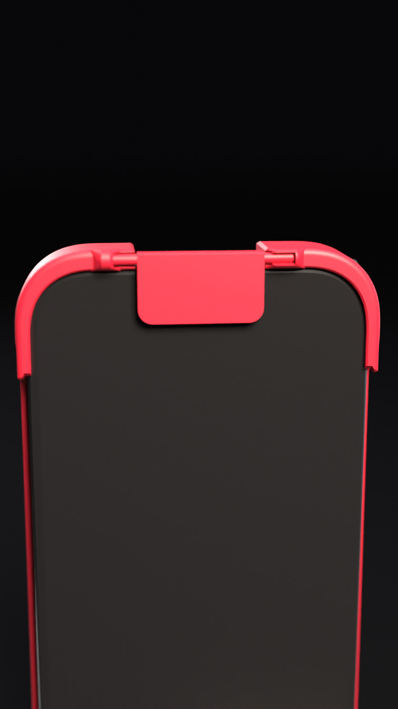
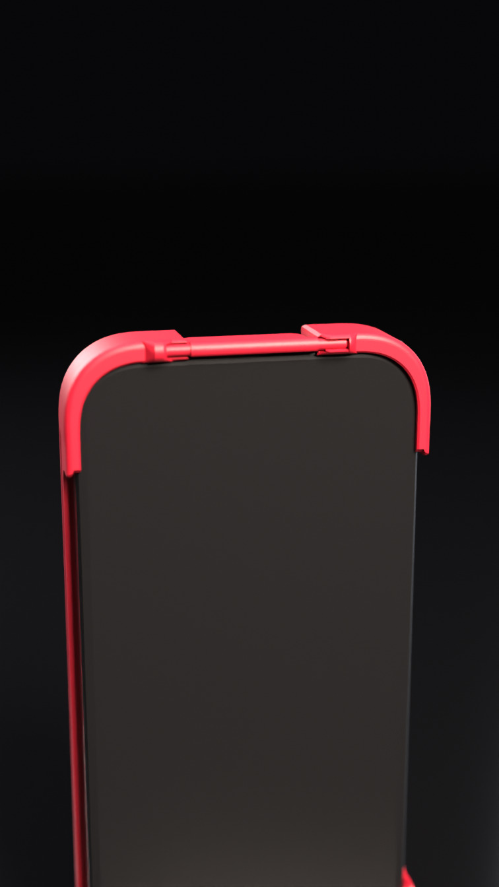
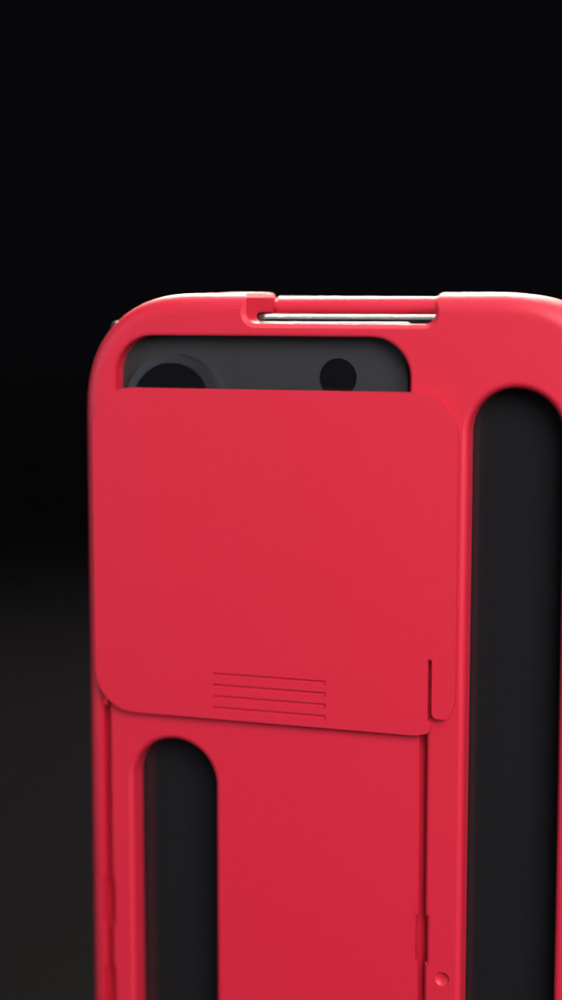

Privacy Case
A little door for your phone's eyes
Why this exists. Your phone has cameras on both sides, and most of the time you can't tell what they're doing. We think you should get a simple, physical say in that. This case puts a flap over the front and back cameras that you open and close with your own finger. It's open source, so it's free to print, free to change, and yours to fork.
What it is
A 3D-printable phone case with a hinged flap that covers the front and back cameras. Flip it shut when you want privacy, open it when you want to take a photo.
It prints flat with no supports and only one colour change, and there are files for 44 phone models.
Where it is now
Version 3.0. The flap hinge now locks into place, and there's a finger notch so you can get at the flap easily when it's stowed.
It has been printed and tested on the iPhone 16 Pro. The other models haven't been tested in print yet, so treat those files as early.
What's next
1. Fit reports from the community, model by model, so we learn what fits and what needs fixing.
2. More phone models.


